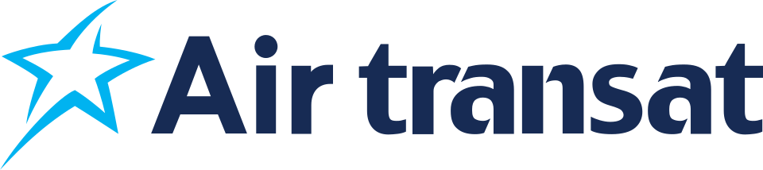

캐나다 브랜드 35
캐나다에서 시작한 브랜드 35개를 로고와 함께 모았습니다. 대표적인 캐나다 브랜드로는 국제 민간 항공 기구(International Civil Aviation Organization), 에어 캐나다(Air Canada), 캐나다 방송 협회(Canadian Broadcasting Corporation), 허드슨 베이 회사(Hudson's Bay Company), 팀홀튼(Tim Hortons), 톰슨 로이터(Thomson Reuters) 등이 있습니다. 수록 기준은 검수된 브랜드 설명이나 공식 웹사이트가 일치하는 위키데이터 개체에서 기원 국가가 확인된 경우로 한정했습니다.
다른 국가 보기
국가별 전체 →산업별로는 미디어·엔터테인먼트 6개, 식음료 5개, 리테일·커머스 4개, 기술·전자 4개 순입니다. 설립연도가 확인된 브랜드는 30개이며 가장 오래된 곳은 1817년, 가장 최근은 2008년에 시작했습니다. 시기별로는 1900년 이전 7개, 1900~1949년 5개, 1950~1999년 13개, 2000년 이후 5개입니다. 수록 자료로는 로고 이미지 32개, 로고 변천 자료 3개, 연혁 타임라인 2개를 갖췄습니다. 이 가운데 32개는 공식 웹사이트가 일치하는 위키데이터 개체로 연결해 두었습니다.
산업별 캐나다 브랜드
캐나다 브랜드 목록
 달러라마Dollarama캐나다 · 1992년
달러라마Dollarama캐나다 · 1992년달러라마(Dollarama)는 캐나다 최대의 1~5달러 균일가 저가 소매 체인이다.
 캐나다 국철Canadian National Railway캐나다 · 1959년
캐나다 국철Canadian National Railway캐나다 · 1959년캐나다 국철(Canadian National Railway, CN)은 캐나다의 대형 철도 기업이다.
 아크테릭스Arc'teryx캐나다 · 1989년
아크테릭스Arc'teryx캐나다 · 1989년아크테릭스(Arc'teryx)는 1989년 캐나다에서 창립한 아메르 스포츠 산하의 기술 중심 아웃도어 의류·장비 브랜드이다.
 아르샹보Archambault캐나다 · 1896년
아르샹보Archambault캐나다 · 1896년아르샹보(Archambault)는 캐나다 퀘벡의 서적·음반·문화상품을 취급하는 소매 체인이다.
드세르DeSerres캐나다드세르(DeSerres)는 캐나다의 미술·공예 용품 및 액자 전문 소매 체인이다.
 재즈 항공Jazz Aviation캐나다 · 2001년
재즈 항공Jazz Aviation캐나다 · 2001년재즈 항공(Jazz Aviation)은 캐나다 노바스코샤주 핼리팩스에 본사를 둔 지역 항공사이다.
 리서치 인 모션BlackBerry캐나다 · 1984년
리서치 인 모션BlackBerry캐나다 · 1984년리서치 인 모션(BlackBerry)은 1984년 설립되어 온타리오 주 워털루에 본사를 둔 캐나다 소프트웨어 기업이다.
 봄바디어Bombardier캐나다 · 1942년
봄바디어Bombardier캐나다 · 1942년봄바디어(Bombardier)는 조제프아르망 봉바르디에가 1942년에 창립한 캐나다의 기업이다.
 로나Rona캐나다 · 1939년
로나Rona캐나다 · 1939년로나(Rona)는 1939년 캐나다에서 독립 철물상 연합으로 출발한 홈임프루브먼트·건축자재 소매 브랜드다.
 RBC 은행Royal Bank of Canada캐나다 · 1864년
RBC 은행Royal Bank of Canada캐나다 · 1864년RBC 은행(Royal Bank of Canada)은 캐나다의 다국적 금융 서비스 기업이다.
 톰슨 로이터Thomson Reuters캐나다 · 2008년
톰슨 로이터Thomson Reuters캐나다 · 2008년톰슨 로이터(Thomson Reuters)는 캐나다 토론토에 본사를 둔 다국적 정보·미디어 기업이다.
 알루도Corel캐나다 · 1985년
알루도Corel캐나다 · 1985년알루도(Corel)는 캐나다 온타리오주 오타와에 본사를 둔 컴퓨터 소프트웨어 회사이다.
 국제 민간 항공 기구International Civil Aviation Organization캐나다 · 1944년
국제 민간 항공 기구International Civil Aviation Organization캐나다 · 1944년국제 민간 항공 기구(International Civil Aviation Organization)는 유엔 산하의 전문기구이다.
 쇼피파이Shopify캐나다 · 2006년
쇼피파이Shopify캐나다 · 2006년쇼피파이(Shopify)는 캐나다 오타와에 본사를 두고 소매 판매시점 시스템용 클라우드 전자상거래 관리 플랫폼을 운영하는 다국적 전자상거래…
 몰슨Molson캐나다
몰슨Molson캐나다몰슨(Molson)은 1786년 John Molson이 창업한 캐나다의 맥주 기업으로, 본사는 몬트리올에 있다.
 룰루레몬Lululemon Athletica캐나다 · 1998년
룰루레몬Lululemon Athletica캐나다 · 1998년룰루레몬(Lululemon Athletica)은 1998년 캐나다 밴쿠버에서 설립된 기능성 스포츠웨어 브랜드이다.
 벨 캐나다Bell Canada캐나다 · 1880년
벨 캐나다Bell Canada캐나다 · 1880년벨 캐나다(Bell Canada)는 퀘벡 몬트리올에 본사를 둔 캐나다의 통신 및 미디어 회사이다.

에어 트랜샛Air Transat캐나다 · 1986년에어 트랜샛(Air Transat)은 캐나다 몬트리올에 본사를 둔 레저 전용 항공사이다.
 웨스트제트WestJet캐나다 · 1996년
웨스트제트WestJet캐나다 · 1996년웨스트제트(WestJet)는 1996년에 설립된 캐나다의 저비용 항공사이다.
 팀홀튼Tim Hortons캐나다 · 1964년
팀홀튼Tim Hortons캐나다 · 1964년팀홀튼(Tim Hortons)은 커피와 도넛을 판매하는 캐나다의 커피 전문점이다.
 캐나다 구스Canada Goose Inc.캐나다 · 1957년
캐나다 구스Canada Goose Inc.캐나다 · 1957년캐나다 구스(Canada Goose Inc.)는 1957년 Sam Tick이 Metro Sportswear Ltd.라는 이름으로 설립한…
 허드슨 베이 회사Hudson's Bay Company캐나다
허드슨 베이 회사Hudson's Bay Company캐나다허드슨 베이 회사(Hudson's Bay Company)는 1670년 캐나다 지역의 모피 교역을 위해 설립된 잉글랜드의 특허 기업이며, 현재는…
 몬트리올 은행Bank of Montreal캐나다 · 1817년
몬트리올 은행Bank of Montreal캐나다 · 1817년몬트리올 은행(Bank of Montreal)은 1817년에 설립된 캐나다의 은행이다.
 에어 캐나다Air Canada캐나다 · 1937년
에어 캐나다Air Canada캐나다 · 1937년에어 캐나다(Air Canada)는 캐나다의 국책 항공사이자 최대 항공사로, 토론토 피어슨 국제공항을 중심으로 정기편과 전세기편의 승객·화물…
 캐나디안 퍼시픽 철도Canadian Pacific Railway캐나다 · 1881년
캐나디안 퍼시픽 철도Canadian Pacific Railway캐나다 · 1881년캐나디안 퍼시픽 철도(Canadian Pacific Railway)는 캐나다의 1급 철도 회사이다.
 캐나다 방송 협회Canadian Broadcasting Corporation캐나다 · 1936년
캐나다 방송 협회Canadian Broadcasting Corporation캐나다 · 1936년캐나다 방송 협회(Canadian Broadcasting Corporation)는 캐나다의 국영 방송국이다.
 스코샤 은행Scotiabank캐나다 · 1832년
스코샤 은행Scotiabank캐나다 · 1832년스코샤 은행(Scotiabank)은 캐나다의 금융회사로, 정식 명칭은 노바 스코샤 은행(The Bank of Nova Scotia)이다.
 봉사운드Bonsound캐나다 · 2004년
봉사운드Bonsound캐나다 · 2004년봉사운드(Bonsound)는 2004년 캐나다 퀘벡 몬트리올에서 설립된 인디 음반 레이블이다.
 Granville Island Brewing캐나다 · 1984년
Granville Island Brewing캐나다 · 1984년Granville Island Brewing은 캐나다 브리티시컬럼비아주 밴쿠버의 Granville Island에서 출발한 양조장이다.
 Alexander Keith's Brewery캐나다 · 1820년
Alexander Keith's Brewery캐나다 · 1820년Alexander Keith's Brewery는 캐나다 노바스코샤주 핼리팩스에 있는 양조장이다.
포시즌스 호텔(Four Seasons Hotels and Resorts)은 캐나다 토론토에 본사를 둔 럭셔리 호텔·리조트 기업이다.
캐나다 임페리얼 상업은행(Canadian Imperial Bank of Commerce)은 토론토 금융지구의 CIBC Square에 본사를 둔…
 Pornhub캐나다 · 2007년
Pornhub캐나다 · 2007년Pornhub(Pornhub)는 야동을 제공하는 캐나다의 비디오 호스팅 서비스이다.
칼링(Carling)은 1840년 토머스 칼링이 캐나다 런던에 설립한 양조업체에서 비롯된 맥주 브랜드이다.
 D-Noy Muzik캐나다
D-Noy Muzik캐나다D-Noy Muzik는 캐나다의 미디어·엔터테인먼트 브랜드로, 콘텐츠 포맷, 팬덤, 채널 운영, 지식재산권 확장이 함께 작동하는 영역입니다.